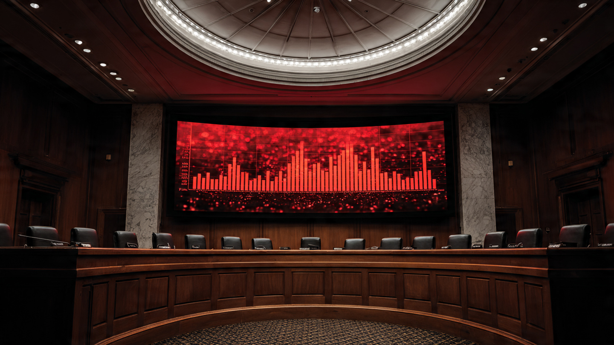

Congress Is Fighting a ‘Kill Switch’ That Doesn’t Exist. The 44,000 Dead Since 2021 Are Real.

According to the toxicology reports, 11,904 people died in alcohol-impaired crashes in the United States last year.[1] The year before that, 12,429, and the year before that, 13,524. Stack the bodies from November 2021 through early 2026 and you get roughly 44,000 dead in crashes where a driver blew above 0.08 BAC.
November 2021 is when Congress told NHTSA to fix this. The HALT Drunk Driving Act, tucked inside the bipartisan Infrastructure Investment and Jobs Act, mandated a federal safety standard requiring passive alcohol detection technology in all new vehicles.[2] NHTSA had until November 2024 to publish a draft rule, and it never did.
Now a faction in Congress wants to kill the mandate entirely.
Rep. Chip Roy of Texas calls it "a direct threat to our Fourth Amendment rights" and introduced an amendment to defund implementation.[3] Rep. Thomas Massie of Kentucky stood on the House floor in January and warned that "the car dashboard becomes your judge, your jury, and your executioner." Viral TikToks and Instagram reels have rebranded the whole concept as a government-controlled "kill switch," racking up millions of views with scenarios of cars shutting down on highways at federal command.
Massie himself conceded a detail that undercuts the entire panic: "The technology doesn't exist." He said this while arguing against it, which is worth letting sit for a moment. Congress is fighting to defund a technology that hasn't been defined, built, or deployed, while the problem it was designed to address kills 34 people every single day.[1]
The technology that does exist, at the research stage, is called DADSS.[4] Driver Alcohol Detection System for Safety. Two approaches: touch-based tissue spectrometry that reads blood alcohol through your fingertip on the start button, and an exhaled-breath sensor built into the cabin that samples ambient air. Passive. Non-invasive. No breathalyzer tube, no ignition interlock, no government remote control. NHTSA's own research estimates this technology could save 9,000 lives per year at full fleet penetration, which would take 15 to 20 years of new-car sales to achieve.[5] The Alliance for Automotive Innovation supports it. The NTSB recommended it in 2022.[6]
Our FARS toxicology data across 490,736 drivers involved in fatal crashes between 2014 and 2023 confirms the scale: 15.1% tested positive for alcohol, 20.0% showed any impairment.[7] One in five. That is not a rounding error or a statistical artifact. That is a structural feature of American road death, and it has been for decades.
The counterargument deserves full voice, because the engineering and civil liberties concerns are real. DADSS technology is unproven in mass production, and false positives could strand sober drivers in real danger. Any system monitoring driver behavior carries genuine privacy implications, and the history of surveillance technology creep in other domains gives reasonable people reason to worry about mission expansion. These concerns are legitimate engineering and civil liberties questions that a well-written rule should address.
But killing the mandate solves none of them. It just guarantees the technology never gets tested, refined, or deployed while 12,000 people a year keep dying. The "kill switch" framing converts a rulemaking problem into a culture war, and culture wars don't write federal safety standards. Rulemaking does.
Calculate it yourself: from November 15, 2021 (when Biden signed the Infrastructure Act) through April 2026, the annual alcohol-impaired death tolls run 13,384, 13,524, 12,429, 11,904, and a partial 2025 trending at roughly 11,000.[1] [8] Add the prorated fractions for partial years and you land near 44,000. Even if DADSS only prevented half of those, at half fleet penetration, you are still talking about thousands of people who would be alive today if NHTSA had simply done its job on deadline.
What you should do: Check whether your current vehicle has any form of driver monitoring. Most don't. If you're buying new, ask the dealer about driver attention alerts, which at least catch drowsiness. Support or oppose the HALT Act with your representative's office based on the actual statutory text (Section 24220 of the Infrastructure Investment and Jobs Act), not a TikTok. The NHTSA rulemaking docket, when it eventually opens, accepts public comment. Use it. And if you've had two drinks, the math on your blood alcohol is probably wrong. Call a ride, because the toxicology reports are full of people who thought they were fine.
Sources & References
- NHTSA, Drunk Driving: Statistics and Resources, 2024. 11,904 alcohol-impaired driving fatalities (BAC ≥ 0.08) in 2024; 34 daily deaths. nhtsa.gov
- Infrastructure Investment and Jobs Act, Pub.L. 117–58, Sec. 24220, “HALT Drunk Driving Act,” signed November 15, 2021. Required NHTSA to issue a safety standard for advanced impaired driving prevention technology within 3 years. congress.gov
- Military.com, “GOP Lawmakers Want FISA Amendment Amid ‘Kill Switch’ Car Surveillance Fears,” April 29, 2026. military.com
- DADSS (Driver Alcohol Detection System for Safety), a joint NHTSA/Automotive Coalition for Traffic Safety research program. Touch-based tissue spectrometry and exhaled-breath sensor approaches. dadss.org
- NHTSA, Countermeasures That Work: Emerging Issues, 2021. Estimates 9,000 lives annually saveable with vehicle-integrated alcohol detection. nhtsa.gov
- AAA, “AAA Supports NTSB Call to Fight Drunk Driving with Technology,” September 2022. 230,000+ U.S. deaths in alcohol-impaired crashes since 2000. newsroom.aaa.com
- The Crash Report analysis of NHTSA FARS toxicology data, 2014–2023. 490,736 drivers in fatal crashes; 15.1% alcohol-positive; 20.0% any impairment. nhtsa.gov/fars
- NHTSA, 2025 Traffic Death Estimates & 2024 FARS. 2025 fatalities estimated at 36,640 (down 6.7%). nhtsa.gov
Source: NHTSA FARS 2014–2023; NHTSA drunk driving statistics 2021–2024. Alcohol-impaired fatality counts use NHTSA’s BAC ≥ 0.08 threshold with statistical imputation for untested drivers. The 44,000 cumulative estimate sums annual figures with prorated partial years and carries ±5% uncertainty from imputation methodology. See methodology for caveats.